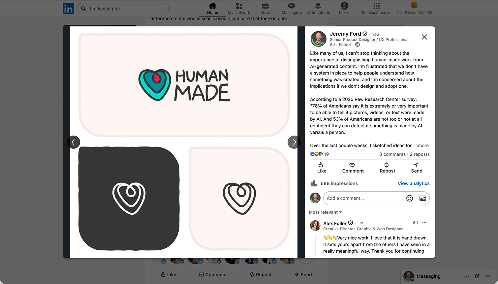
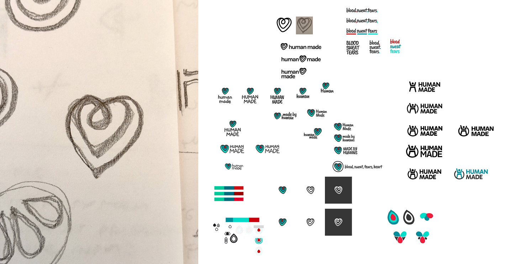
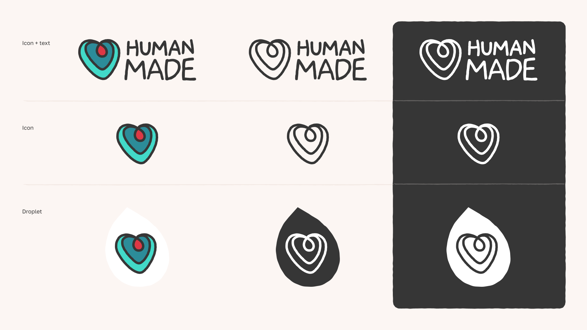
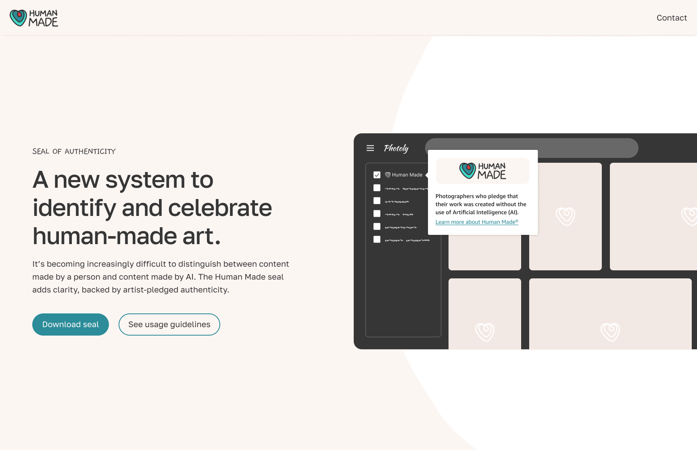
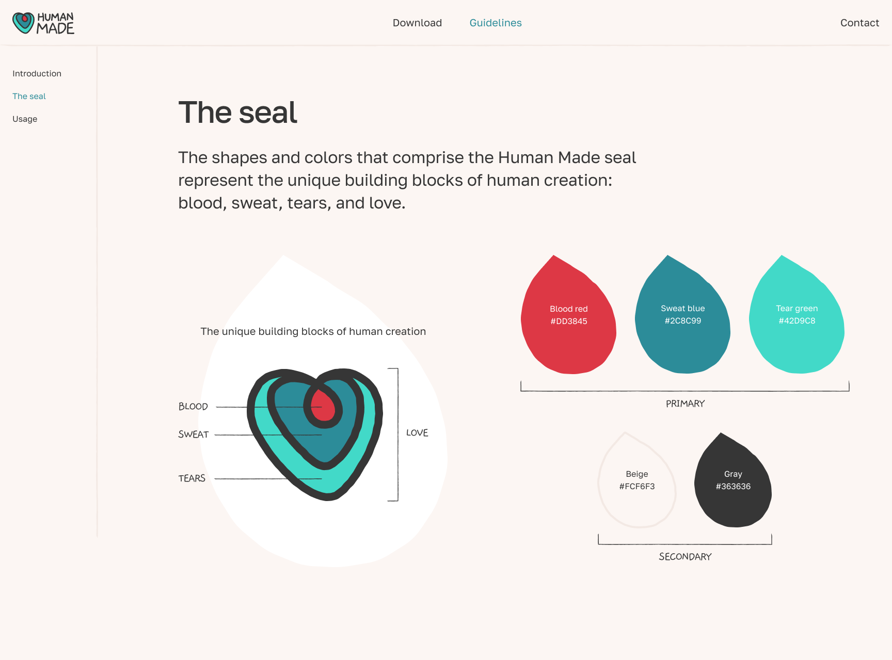

Branding Personal UI
Human Made is a seal system that helps internet users understand if an image, video, site, or other visual artifact has been created by a person or by AI. Creators can use a micosite to review usage guidelines and download assets like PNGs and SVGs, which they can apply to their work.
A microsite for creators to download assets and view usage recommendations.
With the recent surge of AI applications that generate high-quality visuals, many of us find it challenging to differentiate between output that's been created by a human being and output that hasn't. Luckily, there are several emerging solutions to address this issue: LinkedIn uses Content Credentials, Google created SynthID, and BBC published an article featuring several 'AI-free' logos. I believe our identifier should feel more human.
One night, before going to sleep (yes, these types of issues keep me awake), I sketched ideas for a seal that would certify the authenticity of human-made content. I saw it as the equivalent of the 'USDA Organic' or 'B Corp' seals that instantly communicate integrity and instill confidence. I wasn't sure what to do with my ideas until I read a LinkedIn post from Creative Director Alex Fuller that inspired me to refine one of my sketches and share the progress as a follow-up post. It received a considerable amount of engagement, which validated the need for a usable seal.

My original LinkedIn post that proposed a Human Made seal people could embed in their work.
The icon element of the logo was hand-drawn in Figma, over my original sketch that I drew with pencil and paper. The text element of the logo was created by customizing Gaegu, a handwritten-style font designed by JIKJI SOFT, a Korean type foundry. The shapes and colors are intended to represent and celebrate the unique building blocks of human creation: blood, sweat, tears, and love.

Sketches for the Human Made logo.

The final Human Made logos shown in numerous formats and colors to suit varying needs.
Using Figma, I spun up a microsite in just a couple days that allowed creators to download different versions of the seal, depending on their needs, and learn how to use them in their work.
It's worth mentioning a potential risk of the project: there is nothing restricting the use of the seal. This means that the seal could be applied to AI-generated content. Human Made operates on the honor system; a creator pledges what they created was indeed conceived and created with no assistance from AI.

Home page for the microsite that briefly explains the problem and solution.

Seal page for the microsite that explains the anatomy and meaning of the logo.
Lots of questions remain about the future of this system (or any certification system) remain: